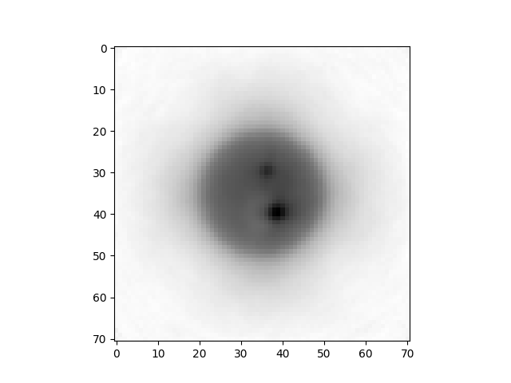

Note
Go to the end to download the full example code.
Easy_CT Reconstruction#
This example shows how use the TOR package to build and reconstruct a easyPET/CT system.
Reading file: C:\Users\pedro\Downloads\simulatedsinogram_matrix.tor
Field: ENERGYA
...............................
Mean: 0.0
Std: 0.0
Range: 0.0 to 0.0
Median: 0.0
Min diff: None
Number of unique values: 1
-------------------------------
Field: ENERGYB
...............................
Mean: 59.3473
Std: 7.5839
Range: 45.0 to 79.99997
Median: 59.0179
Min diff: 0.0001
Number of unique values: 801999
-------------------------------
Field: IDA
...............................
Mean: 0.0
Std: 0.0
Range: 0.0 to 0.0
Median: 0.0
Min diff: None
Number of unique values: 1
-------------------------------
Field: IDB
...............................
Mean: 15.5011
Std: 9.1186
Range: 0.0 to 31.0
Median: 16.0
Min diff: 1.0
Number of unique values: 32
-------------------------------
Field: AXIAL_MOTOR
...............................
Mean: -179.0858
Std: 103.9007
Range: -358.2 to -0.0
Median: -178.2
Min diff: 1.8
Number of unique values: 200
-------------------------------
Field: FAN_MOTOR
...............................
Mean: -0.0044
Std: 32.7876
Range: -54.0 to 54.0
Median: 0.0
Min diff: 0.225
Number of unique values: 481
-------------------------------
Field: TIME
...............................
Mean: 2404.7296
Std: 1388.3303
Range: 7e-05 to 4809.81273
Median: 2404.63416
Min diff: 0.0001
Number of unique values: 28129522
-------------------------------
Number of events: 29326853
Number of events per second: 6097.296229511117
Number of events per frame per second: [np.float64(10589.59604769927), np.float64(10348.808504850227), np.float64(10454.672647817863), np.float64(10609.436268621823), np.float64(7049.392973039373), np.float64(6634.767371080418), np.float64(6992.534329745741), np.float64(6822.576706292056)]
Number of motors: 2
Global detector ID not set. Automatically setting is going to run. Note that incomplete data could set a wrong global ID leading to incorrect reconstruction
Number of motors detected: 2
AXIAL_MOTOR step 1.7999999999999545
AXIAL_MOTOR range 200
FAN_MOTOR step 0.22499999999999432
FAN_MOTOR range 481
IDA number of detectors 1
IDB number of detectors 32
GlobalID_maximum: 3078399
GlobalID_minimum: 0
Expected GlobalID maximum: 3078400
Starting reconstruction
________________________________
Starting Normalization
________________________________
Fan Motor Step: 0.22499999999999432
Axial Motor Step: 1.7999999999999545
Range Top Motor: 108.0
Begin Axial Motor Position: -0.0
End Axial Motor Position: -358.2
Calculate All Positions All Detectors: True
Generate Motor Positions: True
Calculating source position for all events detected...
Calculating parametric positions of the center and vertices of the detector for all events...
Centroid calculated for all events...
Vertice 0 calculated for all events...
Vertice 1 calculated for all events...
Vertice 2 calculated for all events...
Vertice 3 calculated for all events...
Vertice 4 calculated for all events...
Vertice 5 calculated for all events...
Vertice 6 calculated for all events...
Vertice 7 calculated for all events...
[[[ -6.9275036 48.244366 -18.24 ]
[-25.314726 71.949 -18.24 ]
[-26.895681 70.72266 -18.24 ]
...
[-25.314726 71.949 -15.96 ]
[-26.895681 70.72266 -15.96 ]
[ -8.509279 47.017326 -15.96 ]]
[[ -5.0690937 49.685806 -18.24 ]
[-23.45717 73.38984 -18.24 ]
[-25.038157 72.16352 -18.24 ]
...
[-23.45717 73.38984 -15.96 ]
[-25.038157 72.16352 -15.96 ]
[ -6.6509495 48.458885 -15.96 ]]
[[ -6.9275036 48.244366 -15.96 ]
[-25.314726 71.949 -15.96 ]
[-26.895681 70.72266 -15.96 ]
...
[-25.314726 71.949 -13.679999 ]
[-26.895681 70.72266 -13.679999 ]
[ -8.509279 47.017326 -13.679999 ]]
...
[[ -6.842346 -47.406456 13.679999 ]
[-24.379631 -71.74668 13.679999 ]
[-22.75632 -72.9164 13.679999 ]
...
[-24.379631 -71.74668 15.96 ]
[-22.75632 -72.9164 15.96 ]
[ -5.218212 -48.576828 15.96 ]]
[[ -4.9342384 -48.78145 15.96 ]
[-22.472347 -73.12102 15.96 ]
[-20.849022 -74.290695 15.96 ]
...
[-22.472347 -73.12102 18.24 ]
[-20.849022 -74.290695 18.24 ]
[ -3.3100204 -49.95171 18.24 ]]
[[ -6.842346 -47.406456 15.96 ]
[-24.379631 -71.74668 15.96 ]
[-22.75632 -72.9164 15.96 ]
...
[-24.379631 -71.74668 18.24 ]
[-22.75632 -72.9164 18.24 ]
[ -5.218212 -48.576828 18.24 ]]]
Creating vectorial space
Transforming points to positive points
Max X: 200.24391174316406 Min X: 0.0
Max Y: 200.24392700195312 Min Y: 0.0
Image Shape(71, 71, 37)
Normalization GPU
GPU STARTED - Multiple reads
Start_point: 65,65,0
Image size: 71,71, 37
81.7 % of device memory is free.
Number events for reconstruction: 3084800
Iteration number: 1
----------------
81.7 % of device memory is free.
Subset number: 0
Time part Forward Projection 1 : 1.5580565929412842
SUM VOR: 5146076672.0
LEN VOR: 354734
begin_dataset 0
end_dataset 3084800
Time part Backward Projection 1 : 5.186734914779663
adjust_coef: 5158220800.0
SUM IMAGE: 85311684608.0
C:\Users\pedro\Downloads\9\iterations\_it0_sb0
Calculating source position for all events detected...
Calculating parametric positions of the center and vertices of the detector for all events...
Centroid calculated for all events...
Vertice 0 calculated for all events...
Vertice 1 calculated for all events...
Vertice 2 calculated for all events...
Vertice 3 calculated for all events...
Vertice 4 calculated for all events...
Vertice 5 calculated for all events...
Vertice 6 calculated for all events...
Vertice 7 calculated for all events...
[[[ -6.9275055 48.24436 -18.24 ]
[-25.314713 71.949005 -18.24 ]
[-26.89568 70.72266 -18.24 ]
...
[-25.314713 71.949005 -15.96 ]
[-26.89568 70.72266 -15.96 ]
[ -8.509277 47.017326 -15.96 ]]
[[ -8.439478 48.00296 -18.24 ]
[-27.562197 71.118355 -18.24 ]
[-29.10386 69.84295 -18.24 ]
...
[-27.562197 71.118355 -15.96 ]
[-29.10386 69.84295 -15.96 ]
[ -9.981928 46.72685 -15.96 ]]
[[ -9.943119 47.714184 -18.24 ]
[-29.782478 70.217514 -18.24 ]
[-31.283321 68.89431 -18.24 ]
...
[-29.782478 70.217514 -15.96 ]
[-31.283321 68.89431 -15.96 ]
[-11.444729 46.39025 -15.96 ]]
...
[[ -9.981928 -46.72685 15.96 ]
[-29.103865 -69.84296 15.96 ]
[-27.562193 -71.118355 15.96 ]
...
[-29.103865 -69.84296 18.24 ]
[-27.562193 -71.118355 18.24 ]
[ -8.439482 -48.00296 18.24 ]]
[[ -8.509277 -47.017323 15.96 ]
[-26.89568 -70.722664 15.96 ]
[-25.314709 -71.949005 15.96 ]
...
[-26.89568 -70.722664 18.24 ]
[-25.314709 -71.949005 18.24 ]
[ -6.9275093 -48.24436 18.24 ]]
[[ -7.0282288 -47.26141 15.96 ]
[-24.660957 -71.532585 15.96 ]
[-23.042248 -72.708664 15.96 ]
...
[-24.660957 -71.532585 18.24 ]
[-23.042248 -72.708664 18.24 ]
[ -5.408695 -48.438156 18.24 ]]]
GPU being use <pycuda._driver.Device object at 0x000001C485B80040>
GPU STARTED - Multiple reads
Start_point: 65,65,0
Image size: 71,71, 37
81.7 % of device memory is free.
Number events for reconstruction: 3070268
Iteration number: 1
----------------
81.7 % of device memory is free.
Subset number: 0
Time part Forward Projection 1 : 1.6599524021148682
SUM VOR: 5096138240.0
LEN VOR: 349652
begin_dataset 0
end_dataset 3070268
Time part Backward Projection 1 : 5.255990982055664
adjust_coef: 1559892.75
SUM IMAGE: 3134157225984.0
C:\Users\pedro\Downloads\9\iterations\_it0_sb0
Iteration number: 2
----------------
81.7 % of device memory is free.
Subset number: 0
Time part Forward Projection 1 : 1.620429277420044
SUM VOR: 7570454311075840.0
LEN VOR: 349652
begin_dataset 0
end_dataset 3070268
Time part Backward Projection 1 : 5.270488739013672
adjust_coef: 0.9915919899940491
SUM IMAGE: 3102879252480.0
Context detached
Reconstruction finished
________________________________
import os
import glob
import matplotlib.pyplot as plt
import numpy as np
import pycuda.driver as cuda
from toor.Corrections.CT.Projector import PyramidalProjector
from toor.Corrections.CT import NormalizationCT, DualRotationNormalizationSystem
from toor.Optimizer import GPUSharedMemoryMultipleKernel
# from toor.ImageReader.Interfile import InterfileWriter
from toor.ImageReader.RawData import RawDataSetter
class ReconstructionEasyPETCT:
def __init__(self, file_path=None, file_path_output=None, iterations=25, subsets=1, algorithm="MLEM",
voxelSize=None, radial_fov_range=None, energyregion=None, fov=35, output_format="raw",
algorithm_options=None):
"""
Reconstruction Manager
:param file_path: Path to the file
:param iterations: Number of iterations
:param subsets: Number of subsets
:param algorithm: Algorithm to use LM-MLEM or LM-MRP
"""
if algorithm_options is None:
algorithm_options = [0.1, 3]
if radial_fov_range is None:
radial_fov_range = [0, 25]
self.radial_fov_range = radial_fov_range
if file_path is None:
raise FileExistsError
if file_path_output is None:
file_path_output = os.path.dirname(file_path)
if voxelSize is None:
voxelSize = [17, 0.8, 0.8]
self.voxelSize = voxelSize
self._normalizationMatrix = None
self.ctx = None # Context of the GPU
self.device = None # Device of the GPU
self.cuda = cuda # Cuda driver
self.cuda.init() # Initialize the cuda driver
self.filePath = file_path # Path to the file
self.filePathOutput = file_path_output
self._fov = fov # Field of view
self._fileOutputType = output_format # Output file type
self.iterations = iterations # Number of iterations
self.subsets = subsets # Number of subsets
self.algorithm = algorithm # Algorithm to use
self.algorithm_options = algorithm_options # Algorithm options
self.lastImageReconstructed = None # Last image reconstructed
self.saved_image_by_iteration = True
self.energyRegion = energyregion
self.ToRFile_reader = ToRFile(filepath=self.filePath)
self.ToRFile_reader.read()
folder = self.filePathOutput
# find the bigger number in the folder ex."1"
# check if a series numpy number exist in the folder. If not create a new one. If yes, create a new one with a higher number
series_file = "seriesID.npy"
series_file_path = os.path.join(folder, series_file)
if os.path.exists(series_file_path):
with open(series_file_path, "rb") as f:
self._seriesNumber = np.load(f)
self._seriesNumber += 1
np.save(series_file_path, self._seriesNumber)
else:
self._seriesNumber = 0
np.save(series_file_path, self._seriesNumber)
folder = os.path.join(folder, str(self._seriesNumber))
if not os.path.exists(folder):
os.makedirs(folder)
self.filePathOutput = folder
plt.figure()
plt.hist(self.ToRFile_reader.fileBodyData["ENERGYB"], bins=500)
energyRegionKeysAvailable = self.ToRFile_reader.calibrations.systemSensitivity.fields
if not energyregion in energyRegionKeysAvailable:
print("Energy Region: ", energyregion, " is not available in the file")
print("Energy Regions available (Choose exactly: )",
self.ToRFile_reader.calibrations.systemSensitivity.fields)
raise ValueError("Energy Region: ", energyregion, " is not available in the file")
self._indexEnergyRegion = self.ToRFile_reader.calibrations.systemSensitivity.fields.index(energyregion)
energyMask = (self.ToRFile_reader.fileBodyData["ENERGYB"] <=
self.ToRFile_reader.calibrations.systemSensitivity.energyWindows[self._indexEnergyRegion][1]) & (
self.ToRFile_reader.fileBodyData["ENERGYB"] >=
self.ToRFile_reader.calibrations.systemSensitivity.energyWindows[self._indexEnergyRegion][
0])
self.ToRFile_reader.fileBodyData.setListmode(self.ToRFile_reader.fileBodyData.listmode[energyMask], regenerateStats=True)
self.ToRFile_reader.fileBodyData.setListModeHistogramHybridMode()
plt.hist(self.ToRFile_reader.fileBodyData["ENERGYB"], bins=500)
plt.savefig(os.path.join(self.filePathOutput, "energy_histogram.png"))
plt.close()
self.projector = PyramidalProjector(voxelSize=voxelSize, FovRadialStart=radial_fov_range[0],
FovRadialEnd=radial_fov_range[1], fov=self._fov, only_fov=True)
self.lastImageReconstructed = None
# self.ToRFile_reader.fileBodyData.saveVariablesTxT(filename=folder)
def saveVariablesTxT(self):
"""
Save the variables in a txt file
:return:
"""
# print variables of acquisition info
folder = os.path.join(self.filePathOutput, "Info.txt")
with open(folder, "w") as f:
f.write("\t\tReconstruction Parameters\n")
f.write("__________________________________________________\n")
f.write("Iterations: " + str(self.iterations) + "\n")
f.write("Subsets: " + str(self.subsets) + "\n")
f.write("Algorithm: " + self.algorithm + "\n")
f.write("Voxel Size: " + str(self.voxelSize) + "\n")
f.write("Radial FOV Range: " + str(self._fov) + "\n")
f.write("Energy Region: " + str(self.energyRegion) + "\n")
f.write("Energy Window: " + str(self.ToRFile_reader.calibrations.systemSensitivity.energyWindows) + "\n")
if self.lastImageReconstructed is not None:
f.write("Image Shape: " + str(self.lastImageReconstructed.shape) + "\n")
# Print the dict of the class
f.write("\n\n")
f.write("\t\tAcquisition Info\n")
f.write("__________________________________________________\n")
for key, value in self.ToRFile_reader.acquisitionInfo.__dict__.items():
f.write(f"{key}: {value}\n")
# if value is an object, print the dict of that class
if hasattr(value, "__dict__"):
for key2, value2 in value.__dict__.items():
f.write(f"\t{key2}: {value2}\n")
f.write("\n\n")
f.write("\t\tCalibrations\n")
f.write("__________________________________________________\n")
for key3, value3 in self.ToRFile_reader.calibrations.__dict__.items():
f.write(f"{key3}: {value3}\n")
# if value is an object, print the dict of that class
if hasattr(value3, "__dict__"):
for key4, value4 in value3.__dict__.items():
f.write(f"\t{key4}: {value4}\n")
f.write("\n\n")
f.write("\t\tSystem Info\n")
f.write("__________________________________________________\n")
for key5, value5 in self.ToRFile_reader.systemInfo.__dict__.items():
f.write(f"{key5}: {value5}\n")
# if value is an object, print the dict of that class
if hasattr(value5, "__dict__"):
for key6, value6 in value5.__dict__.items():
f.write(f"\t{key6}: {value6}\n")
def start(self):
print("Starting reconstruction")
print("________________________________")
self.ctx = cuda.Device(0).make_context() # Create the context
self.device = self.ctx.get_device()
self.generateNormalization()
self.generateImage()
self.ctx.detach()
print("Context detached")
print("Reconstruction finished")
print("________________________________")
def generateNormalization(self):
"""
"""
print("Starting Normalization")
print("________________________________")
normalization = DualRotationNormalizationSystem(self.ToRFile_reader)
normalization.printMotorVariables()
normalization.setEnergyPeakKey(self.energyRegion)
listModeForNormalization = normalization.normalizationLM()
systemInfo = self.ToRFile_reader.systemInfo
# systemInfo.xRayProducer.setFocalSpotInitialPositionWKSystem([12.55, 0, 0]) #Apagar
# nb_eventstest = 2
# normalization.reading_data = normalization.reading_data[:nb_eventstest]
# normalization.reading_data[:, 0] = np.arange(0,360, 360/nb_eventstest)
# normalization.reading_data[:, 1] = np.zeros(nb_eventstest)
# normalization.reading_data[:, 2] = 0
axialMotorData = listModeForNormalization[:,normalization.fieldsListMode.index("AXIAL_MOTOR")]
fanMotorData = listModeForNormalization[:,normalization.fieldsListMode.index("FAN_MOTOR")]
detectorIdData = listModeForNormalization[:,normalization.fieldsListMode.index("IDB")].astype(np.int32)
systemInfo.sourcePositionAfterMovement(axialMotorData, fanMotorData)
systemInfo.detectorSideBCoordinatesAfterMovement(axialMotorData, fanMotorData,
detectorIdData)
self.projector.pointCenterList = systemInfo.sourceCenter
self.projector.pointCorner1List = systemInfo.verticesB[:, 7]
self.projector.pointCorner2List = systemInfo.verticesB[:, 3]
self.projector.pointCorner3List = systemInfo.verticesB[:, 0]
self.projector.pointCorner4List = systemInfo.verticesB[:, 4]
self.projector.setAbsMinMin()
self.projector.transformIntoPositivePoints()
self.projector.amplifyPointsToGPUCoordinateSystem()
self.projector.createVectorialSpace()
self.projector.createPlanes()
# self.projector.setCountsPerPosition(np.ones(systemInfo.sourceCenter.shape[0], dtype=np.int32))
self.projector.setCountsPerPosition((normalization.tiledProbabilityOfDetection * 1000000).astype(np.int32)) # Maybe convert the GPU entry to float32 to be univer
print("Normalization GPU")
optimizer = GPUSharedMemoryMultipleKernel(parent=self, normalizationFlag=False)
optimizer.number_of_iterations = 1
optimizer.multipleKernel()
geometric_normalization = optimizer.im
geometric_normalization /= np.sum(geometric_normalization) #Comentar se não quiser normalização
self._normalizationMatrix = geometric_normalization
folder = self.filePathOutput
file_name = "normalization.raw"
if self._fileOutputType == "raw":
rawData = RawDataSetter(file_name=os.path.join(folder, file_name), size_file_m=self._normalizationMatrix.shape)
rawData.write(self._normalizationMatrix)
# if not os.path.exists(folder):
# os.makedirs(folder)
# exporter = InterfileWriter(file_name=os.path.join(folder, file_name), data=self._normalizationMatrix)
# # exporter.generateInterfileHeader(voxel_size=self.voxelSize, name_subject=1)
# exporter.write()
def generateImage(self):
listModeBody_read = self.ToRFile_reader.fileBodyData
axialMotorData = listModeBody_read["AXIAL_MOTOR"]
fanMotorData = listModeBody_read["FAN_MOTOR"]
detectorIdData = listModeBody_read["IDB"].astype(np.int32)
#filter in energy
systemInfo = self.ToRFile_reader.systemInfo
# systemInfo.xRayProducer.setFocalSpotInitialPositionWKSystem([12.55, 0, 0])
systemInfo.sourcePositionAfterMovement(axialMotorData, fanMotorData)
systemInfo.detectorSideBCoordinatesAfterMovement(axialMotorData,
fanMotorData,
detectorIdData) ## ID_A está trocado com ID_B
self.projector.pointCenterList = systemInfo.sourceCenter
self.projector.pointCorner1List = systemInfo.verticesB[:, 7] #Só esta ordem funciona
self.projector.pointCorner2List = systemInfo.verticesB[:, 3]
self.projector.pointCorner3List = systemInfo.verticesB[:, 0]
self.projector.pointCorner4List = systemInfo.verticesB[:, 4]
self.projector.transformIntoPositivePoints()
self.projector.amplifyPointsToGPUCoordinateSystem()
# self.projector.createVectorialSpace()
self.projector.createPlanes()
# self.projector.setCountsPerPosition(np.ones(systemInfo.sourceCenter.shape[0], dtype=np.int32))
self.projector.setCountsPerPosition(self.ToRFile_reader.fileBodyData.countsPerGlobalID)
# self._normalizationM atrix = np.ones_like(self.projector.im_index_z) # apagar depois
# self._normalizationMatrix = self._normalizationMatrix.astype(np.float32) # apagar depois
# self._normalizationMatrix /= np.sum(self._normalizationMatrix)
optimizer = GPUSharedMemoryMultipleKernel(parent=self,)
optimizer.normalization_matrix = self._normalizationMatrix
print(f"GPU being use {self.device}")
optimizer.multipleKernel()
self.lastImageReconstructed = optimizer.im # Get the last image reconstructed
folder = self.filePathOutput
file_name = "wholebody.raw"
if self._fileOutputType == "raw":
rawData = RawDataSetter(file_name=os.path.join(folder, file_name),
size_file_m=self.lastImageReconstructed.shape)
rawData.write(self.lastImageReconstructed)
# generate a folder called whole_body and save the image
# folder = os.path.join(os.path.dirname(self.file_path), "whole_body")
# exporter = InterfileWriter(file_name=os.path.join(folder, file_name), data=self.lastImageReconstructed,)
# # exporter.generateInterfileHeader(voxel_size=self.voxelSize, name_subject=1)
# exporter.write()
if __name__ == "__main__":
from toor.TORFilesReader import ToRFile
# filename = "../../allvalues.npy"
filename = "C:\\Users\\pedro\\OneDrive\\Ambiente de Trabalho\\intelligent_scan-NewGeometries-CT\\allvalues.npy"
filename = "E:\\easyCT study 1 frontal\\simulatedsinogram_matrix.tor"
filename = "C:\\Users\\pedro\\Downloads\\simulatedsinogram_matrix.tor"
# output_path = "C:/Users/pedro/OneDrive/Ambiente de Trabalho/Iterations_test"
# if not os.path.exists(output_path):
# os.makedirs(output_path)
voxelSize = [0.25, 0.25, 0.5]
voxelSize = [0.5, 0.5, 1]
energyregion = "59.6"
# voxelSize =[1, 1, 1]
# output_path = "C:\\Users\\pedro\\OneDrive\\Ambiente de Trabalho\\all_values.tor"
# output_path = "E:\\simulatedsinogram_matrix.tor"
output_path = None
r = ReconstructionEasyPETCT(filename, iterations=2, subsets=1, algorithm="LM-MLEM",
voxelSize=voxelSize, radial_fov_range=None, energyregion=energyregion, file_path_output=output_path,
algorithm_options=[0.15, 3])
r.start()
r.saveVariablesTxT()
plt.imshow(np.mean(r.lastImageReconstructed[:,:,10:20], axis=2),cmap="gray")
# plt.show()
Total running time of the script: (1 minutes 9.039 seconds)